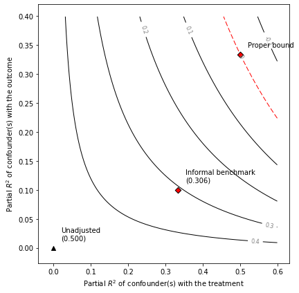

Example of informal benchmarking
[85]:
from sensemakr import sensemakr
from sensemakr import ovb_bounds
from sensemakr.ovb_plots import *
from sensemakr.sensitivity_stats import *
from sensemakr.bias_functions import *
import statsmodels.api as sm
import statsmodels.formula.api as smf
import numpy as np
import pandas as pd
[87]:
%load_ext autoreload
The autoreload extension is already loaded. To reload it, use:
%reload_ext autoreload
[88]:
%autoreload 2
[40]:
def resid_maker(n,df):
N=np.random.normal(0,1,n)
form='N~' +'+'.join(df.columns)
df['N']=N
model=smf.ols(formula=form,data=df).fit()
e = model.resid
e = (e-np.mean(e))/np.std(e)
return(e)
[41]:
# simulates data
n=100
X=np.random.normal(0,1,n)
X=(X-np.mean(X))/np.std(X)
Z=resid_maker(n,pd.DataFrame({'x':X}))
D=X+Z+resid_maker(n,pd.DataFrame({'x':X,'z':Z}))
Y=X+Z+resid_maker(n,pd.DataFrame({'x':X,'z':Z,'d':D}))
[43]:
df=pd.DataFrame({'Y':Y,'X':X,'Z':Z,'D':D})
model_ydx=smf.ols(formula='Y~D+X',data=df).fit()
[49]:
model_ydx.summary()
[49]:
| Dep. Variable: | Y | R-squared: | 0.500 |
|---|---|---|---|
| Model: | OLS | Adj. R-squared: | 0.490 |
| Method: | Least Squares | F-statistic: | 48.50 |
| Date: | Sun, 14 Nov 2021 | Prob (F-statistic): | 2.51e-15 |
| Time: | 16:59:41 | Log-Likelihood: | -162.17 |
| No. Observations: | 100 | AIC: | 330.3 |
| Df Residuals: | 97 | BIC: | 338.1 |
| Df Model: | 2 | ||
| Covariance Type: | nonrobust |
| coef | std err | t | P>|t| | [0.025 | 0.975] | |
|---|---|---|---|---|---|---|
| Intercept | -2.776e-17 | 0.124 | -2.23e-16 | 1.000 | -0.247 | 0.247 |
| D | 0.5000 | 0.088 | 5.686 | 0.000 | 0.325 | 0.675 |
| X | 0.5000 | 0.152 | 3.283 | 0.001 | 0.198 | 0.802 |
| Omnibus: | 5.345 | Durbin-Watson: | 1.918 |
|---|---|---|---|
| Prob(Omnibus): | 0.069 | Jarque-Bera (JB): | 6.813 |
| Skew: | 0.200 | Prob(JB): | 0.0332 |
| Kurtosis: | 4.214 | Cond. No. | 2.41 |
Notes:
[1] Standard Errors assume that the covariance matrix of the errors is correctly specified.
[50]:
# fits treatment regression
model_dx=smf.ols(formula='D~X',data=df).fit()
[55]:
# computes observed partial R2 of X
r2yx_d=partial_r2(model_ydx,covariates='X')
r2dx=partial_r2(model_dx,covariates='X')
[57]:
informal_adjusted_estimate=adjusted_estimate(model=model_ydx,treatment="D",r2dz_x=r2dx,r2yz_dx=r2yx_d)
[82]:
# draws sensitivity contours
ovb_contour_plot(model=model_ydx,treatment="D",lim=0.6)
# adds informal benchmark
add_bound_to_contour(r2dz_x=r2dx,r2yz_dx=r2yx_d,bound_value=informal_adjusted_estimate,
bound_label='Informal benchmark')

[91]:
# compute formal bounds
formal_bound=ovb_bounds.ovb_bounds(model=model_ydx,treatment='D',benchmark_covariates="X",kd=1,ky=1)
[92]:
# contour plot
ovb_contour_plot(model=model_ydx,treatment="D",lim=0.6)
add_bound_to_contour(r2dz_x=r2dx,r2yz_dx=r2yx_d,bound_value=informal_adjusted_estimate,
bound_label='Informal benchmark')
add_bound_to_contour(bounds=formal_bound,
bound_label='Proper bound')
